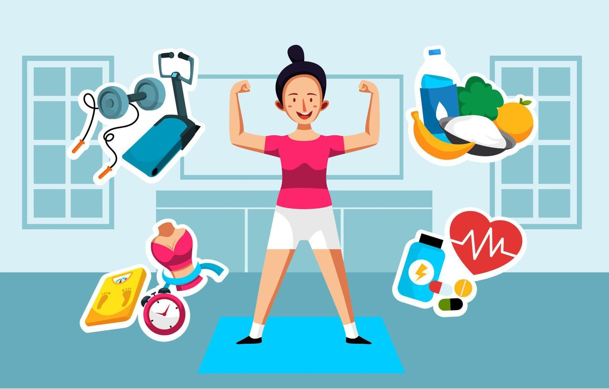

SaludableMENTE
estilos de vida saludable
en este apartado pongo mis 10 hábitos para tener una vida saludable
- comer frutas y verduras
- bañarme todos los días
- recoger mi cuarto
- tender mi cama
- hacer ejercicio
- tomar agua
- cepillarme los dientes
- ir a la escuela
- desayunar
- comer bien
